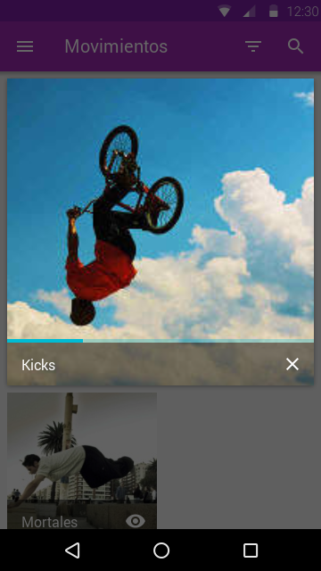
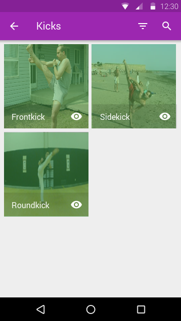

prototipo.ep
Búsqueda
Movimientos
La página de movimientos contiene las categorías de la disciplina seleccionada.
Tiene disponible la opción de búsqueda y la opción de filtrar.
Cada categoría tiene un botón de previsualización
Tiene disponible la opción de búsqueda y la opción de filtrar.
Cada categoría tiene un botón de previsualización
Previsualización: movimientos

Filtro: movimientos
Categoría
